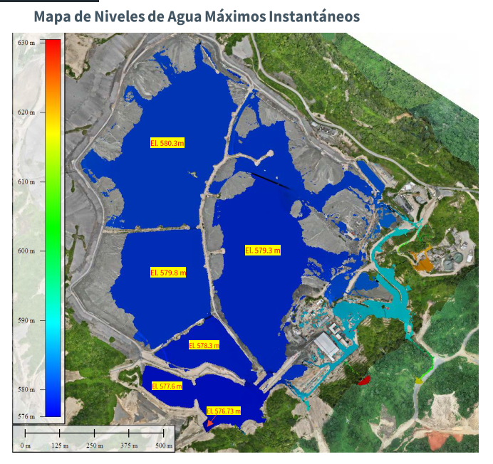
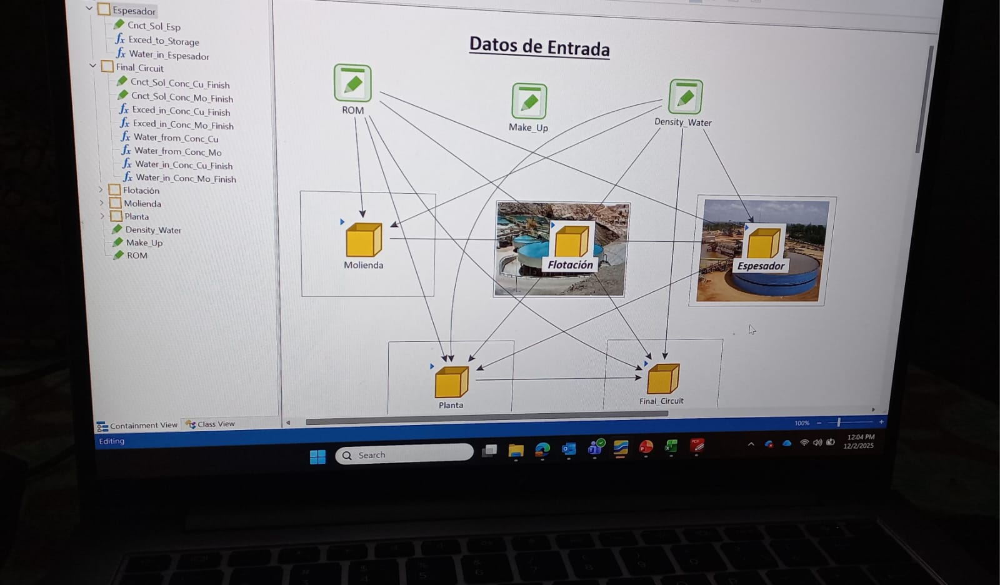
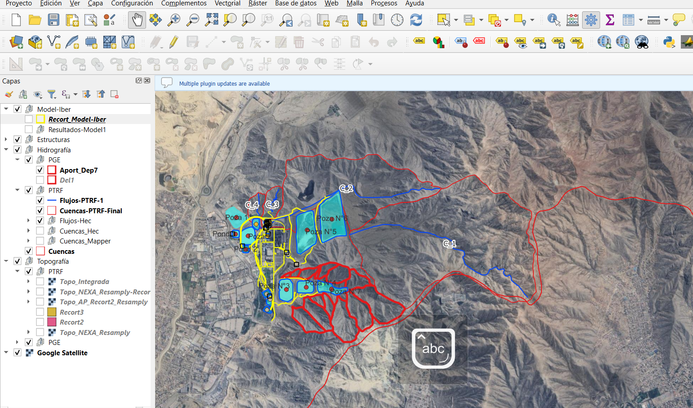
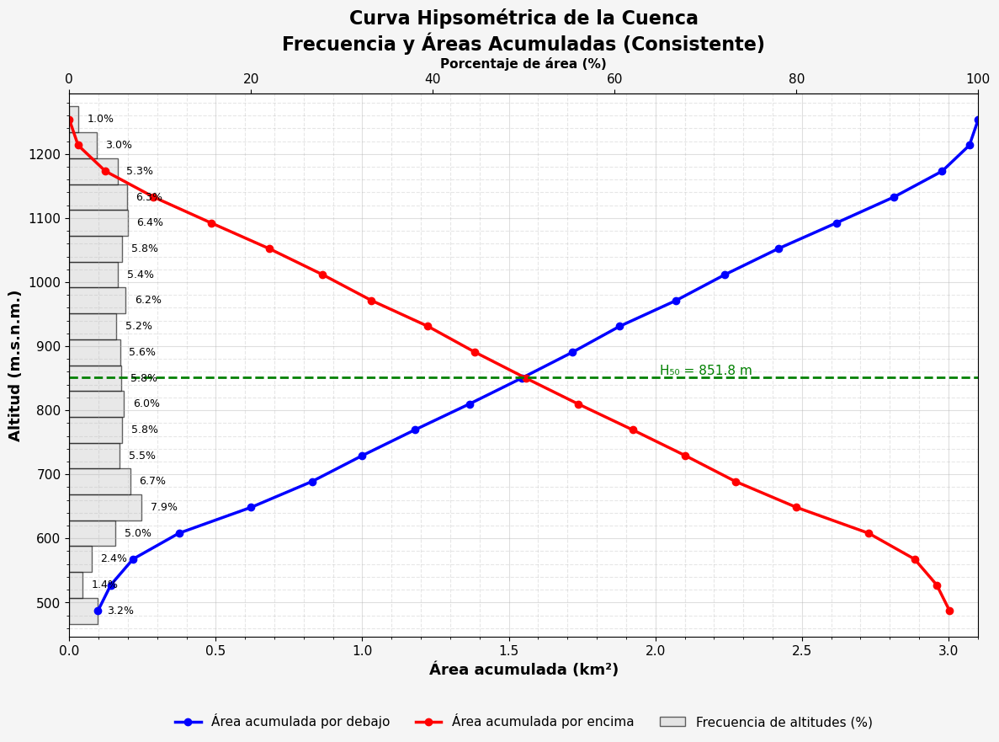
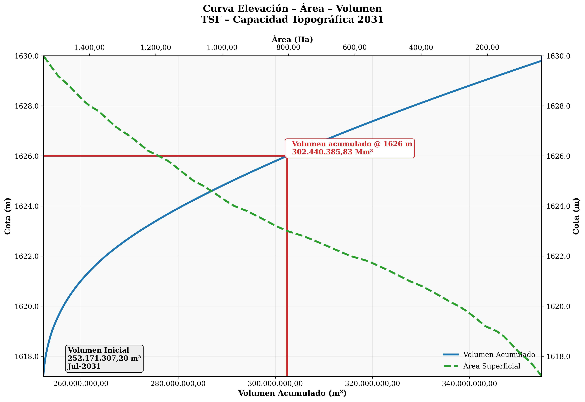

Especialista en hidráulica e hidrología aplicada a la gestión sostenible del recurso hídrico en unidades mineras.
Soy bachiller en Ingeniería Civil con experiencia en modelación hidráulica e hidrológica aplicada al sector minero, desarrollando soluciones técnicas para la evaluación de caudales, análisis de inundaciones y diseño de infraestructura hidráulica en unidades mineras.
Mi trabajo se orienta a la gestión eficiente y sostenible del recurso hídrico, contribuyendo a la toma de decisiones basadas en un análisis técnico riguroso. Cuento con dominio en modelamiento hidrodinámico 2D (Iber), hidrológico (HEC-RAS), análisis geoespacial (QGIS) y programación científica en Python y R.
Estoy comprometido con la aplicación de tecnologías digitales para optimizar la gestión del agua y fortalecer la sostenibilidad ambiental en la industria minera.
Haz clic en cada servicio para ver proyectos reales

Simulación de flujos en cauces naturales y canales artificiales usando Iber para análisis de inundaciones, erosión y evaluación de riesgos en entornos mineros.

Desarrollo de modelos de balance de agua para presas de relaves, integrando variables hidrológicas, operacionales y escenarios probabilísticos.

Delimitación de cuencas, análisis hidrológico y generación de cartografía técnica para proyectos de gestión hídrica en zonas de influencia minera.

Análisis y automatización del procesamiento de variables meteorológicas (precipitación, evaporación, temperatura) para caracterización climática y diseño hidrológico.

Diseño técnico de sistemas de manejo de aguas en unidades mineras: canales, presas de relaves, sistemas de drenaje y obras de control de caudales.
Elaboración de memorias de cálculo hidráulico, informes técnicos ambientales y presentaciones ejecutivas para sustentación técnica ante clientes y reguladores.
Hatch Asociados S.A.
Hatch Asociados S.A.
Universidad Nacional de Ingeniería (UNI)
5to superior · Lima, PerúGrupo Estudiantil del Instituto Vial Iberoamericano – UNI
2024 – 2025Estación de Alerta Temprana Atmosférica – CTIC/OTI UNI
Mayo 2023 – Dic. 2023¿Tienes un proyecto de gestión hídrica o necesitas asesoría técnica en hidráulica aplicada a minería? Escríbeme y conversemos.